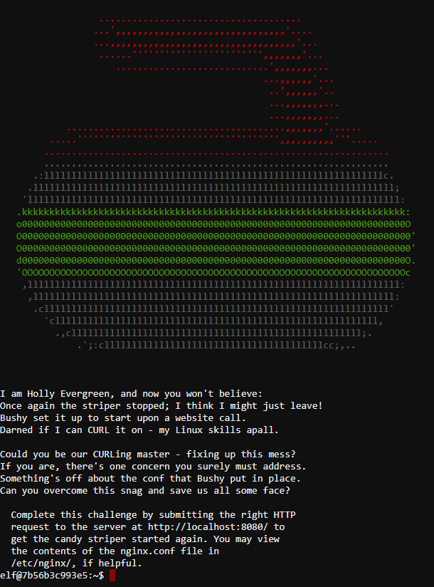

CURLing Master¶
Terminal Challenge¶
Our Solution¶
Using the history command shows the following:
elf@ad352fad5d1b:~$ history
1 netstat -ant
2 ncat --broker -nlvp 9090
3 echo "\302\257\_(\343\203\204)_/\302\257" >> /tmp/shruggins
4 cat /tmp/shruggins
5 curl --http2-prior-knowledge http://localhost:8080/index.php
6 telnet towel.blinkenlights.nl
7 fortune | cowsay | lolcat
8 ps -aux
9 sl
10 figlet I am your father
11 echo 'goHangasaLAmIimalaSAgnaHoG' | rev
12 aptitude moo
13 aptitude -v moo
14 aptitude -vv moo
15 aptitude -vvv moo
16 aptitude -vvvv moo
17 aptitude -vvvvv moo
18 aptitude -vvvvvv moo
19 yes Giddyup
20 factor 512
21 aafire
22 history
Some Linux Easter Eggs are shown here:
6 plays an ASCII animation (starwars)
7a fortune: displays random phrase
7b cowsay: displays a cow with a speech bubble which contains the phrase from fortune
7c lolcat: adds a rainbow of colors to the output
9 displays a Steam Locomotive
10 displays a banner saying ‘I am your father’
11 displays ‘GoHangASalamiImALasagnaHog’
12* displays ‘There are no Easter Eggs in this program.’
* apt-get moo displays a cow and the phrase ‘Have you mooed today?’
13 displays ‘There really are no Easter Eggs in this program.’
14 displays ‘Didn’t I already tell you that there are no Easter Eggs in this program?’
17 displays the following:
All right, you win. /----\ -------/ \ / \ / | -----------------/ --------\ ----------------------------------------------
18 displays ‘What is it? It’s an elephant being eaten by a snake, of course.’ This refers to the book The Little Prince
19 enters an infinite loop that prints ‘Giddyup’
20 factor breaks the number to its prime factors. So factor 512 displays ‘512: 2 2 2 2 2 2 2 2 2’
21 displays an ASCII animation (fire)
In history we can see there is a command curl --http2-prior-knowledge http://localhost:8080/index.php
When we run that we got the following:
elf@11474400e06e:~$ curl --http2-prior-knowledge http://localhost:8080/index.php
<html>
<head>
<title>Candy Striper Turner-On'er</title>
</head>
<body>
<p>To turn the machine on, simply POST to this URL with parameter "status=on"
</body>
</html>
elf@11474400e06e:~$
This instructs us to post the parameter status=on to turn the Candy Striper on.
According to the Curl Manual “It’s easy to post data using curl. This is done using the -d <data> option.”
Thus we used the same command but added -d status=on between knowledge and the URL.
Hints for Kringlecon Question 5¶
Bloodhound Tool From: Holly Evergreen Bloodhound Tool
Bloodhound Demo From: Holly Evergreen Bloodhound Demo